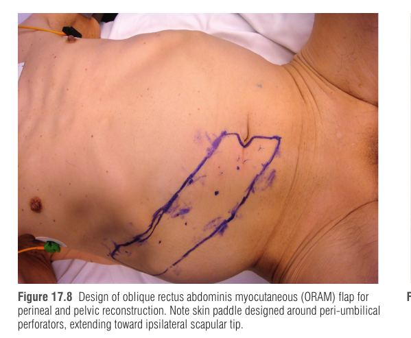
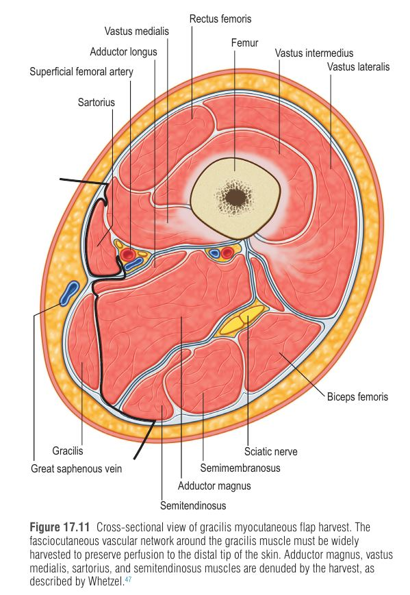
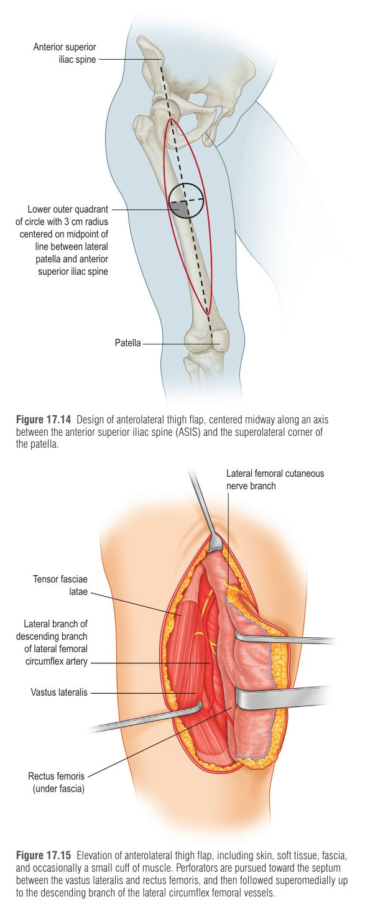
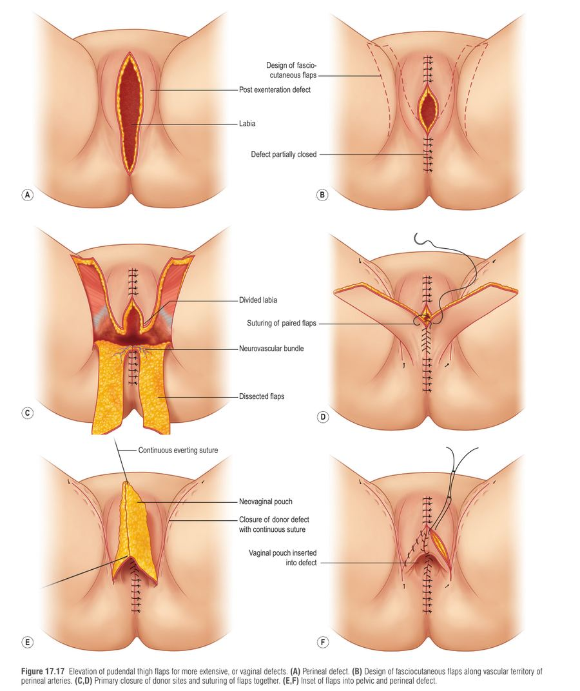
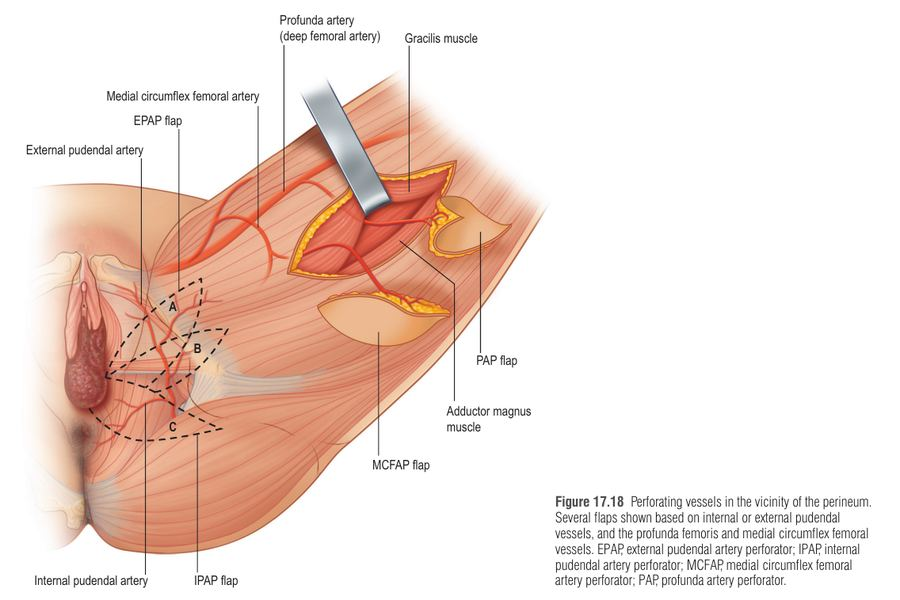

הפרינאום הוא אזור "עוין" לריפוי: לח, מזוהם, נתון ללחץ וגזירה, צמוד למעי, לשלפוחית ולאיברי המין, ובמקרים רבים אחרי הקרנה. רוב הצורך בשחזור נובע מטיפול בסרטן (בעיקר APR – כריתה בטנית-פרינאלית – או pelvic exenteration). המסר המרכזי של הפרק: להביא רקמה בריאה, לא מוקרנת ומכווסלרת אל תוך הפגם – ולהכין תוכנית מראש, כי כך הסיבוכים הופכים ממז'וריים (פיסטולות, חסימת מעי, מורסות אגן) למינוריים (בעיות ריפוי בחתכים).
| שנה / שם | התפתחות | הבעיה שנותרה |
|---|---|---|
| 1910 – Miles | תיאור ה-APR לסרטן פי הטבעת; הפצע הפרינאלי נארז בגזה ונסגר בעיכוב/מעין שניוני | פצע פתוח וכרוני |
| 1948 – Brunschwig | אקסנטרציה של האגן (פוטנציאל לריפוי אונקולוגי) | פגם אגני גדול יותר, תחלואה |
| 1974 – Altemeier | סגירה ראשונית של הפרינאום עם נקזי שאיבה | פצעים מוקרנים/מזוהמים נפתחים; שתלי עור (STSG) בהצלחה מוגבלת |
| שנות ה-70–80 | מעבר ל-דשי שריר: gluteus maximus (סינוס פרינאלי כרוני), רקטוס אבדומיניס (ל"סוס עבודה"), גרסיליס | נפח/הגעה מוגבלים |
| 1989 – Wee | דש פודנדל-ירך (Singapore) עם תחושה לשחזור נרתיק | עור שעיר |
| 2000 – Luo | שימוש ב-ALT בפרינאום (אחרי כשלון גרסיליס); Yu – נתיבי העברה | — |
| 2010+ | דשי פרפורטור, שיטות מזעריות (לפרוסקופי/רובוטי) לקציר הרקטוס | הרחבת האינדיקציות |
פגם שטחי (פצע עור/תת-עור בלבד, לרוב ללא הקרנה): הרקמה סביב בריאה ← הפצע מתכווץ ומחלים בכוונה שנייה, או בעזרת NPWT ושתל עור. הבעיות: עומס חיידקי, לחות, ותנועה/גזירה.
פגם עמוק (אחרי APR / אקסנטרציה): האגן העצמי הוא "טבעת קשיחה" – האגן הגרמי מחזיק את מוצא האגן פתוח, ולכן הפצע לא יכול להתכווץ. נוצר חלל מת (dead space) ← סרומה ← הקרנה פוגעת בכלי דם ← איסכמיה והיעדר חיוניות ← זיהום (פיסטולות, מעי/שלפוחית מזוהמים) ← קריסת הפצע. בנוסף, ללא תמיכה, המעי נופל לתוך האגן המוקרן ← הידבקויות, חסימה, פיסטולות ופריטונאום הרניה.
הפתרון הלוגי: למלא את החלל ב-רקמה וסקולרית שאינה מוקרנת (שרירי/עורי), שמביאה דם, נפח (חיסול dead space), חסם בין המעי לאגן וכיסוי עור – ולכן סגירה בדש מפחיתה סיבוכי פצע ברמה מובהקת לעומת סגירה ראשונית (מטא-אנליזות).
| פגם שטחי (פשוט, לרוב שפיר) | פגם עמוק (מורכב, ממאיר) | |
|---|---|---|
| אטיולוגיה | הידראדניטיס סופורטיבה, פאסייטיס נמק / גנגרנה של פורנייה, טראומה, כיבים אוטואימוניים (pyoderma gangrenosum), סרטן הוולווה, extramammary Paget | סרטן קולורקטלי, ואגינלי, רחמי, שלפוחית, ווולווה |
| הקרנה | נדירה – העור סביב בריא | כמעט תמיד ניאו-אדג'ובנטית |
| גורמים מסבכים | עומס חיידקי, לחות, ניידות | הקרנה, סטומות, זיהום, dead space, הרניה אגנית, לחות, ניידות |
| אפשרויות שחזור | ריפוי שניוני, NPWT, שתל עור, דשי פרפורטור פאסיו-עוריים | רקטוס, גרסיליס, ALT, Singapore, פרפורטור, דש חופשי |
| פרוגנוזה | טובה יותר | מאתגרת – תחלואה גבוהה גם עם דש |
שחזור לא מתחילים לפני שהתהליך הראשוני זוהה והוסר (דברידמן חוזר, טיפול במחלה אוטואימונית). בפגם שטחי ממתינים לביסוס מצע בריא (שבועות עם NPWT) ואז שתל עור; אם הפצע לא מתחיל להחלים למרות אופטימיזציה – עוברים לדש.
בפגמים עמוקים הצורך בדש מיידי בזמן הכריתה הוא האינדיקציה החזקה ביותר – הקרנה מקדימה לבדה מצדיקה זאת. ההחלטה מתקבלת לפני הכריתה, בשיתוף הצוות האונקולוגי, כי היקף הפגם לא ברור עד לסיום הניתוח. יש לדון גם בהעדפה לשחזור נרתיק ובתפקוד מיני.
| דש | יתרונות | חסרונות / נתונים | מתי |
|---|---|---|---|
| רקטוס אבדומיניס (VRAM / TRAM / ORAM) | נפח רב, קשת סיבוב רחבה, כלי דם אמין; הפחתת סיבוכי פרינאום ב-APR מוקרן; תוצאות טובות יותר מדשי ירך בסדרות גדולות (Nelson & Butler) ללא תחלואה בטנית מוגברת | תחלואת אתר תורם בטן; סטומה דו-צדדית (אפשר להעביר דרך ה-external oblique); קושי בהחדרה באגן צר של גבר | קו ראשון לפגמים עמוקים/מוקרנים |
| גרסיליס | סיבוכים סבירים; ירידה בזיהומים מ-46% ל-12% לעומת סגירה ראשונית; ללא תחלואת בטן | נפח שריר קטן, אי-ודאות באי העור | כשהבטן לא זמינה / פגם בינוני |
| ALT (+ vastus lateralis) | אמין; עור גדול; עם vastus – ממלא dead space; גם פגמים סקרליים | פחות נתונים השוואתיים מול רקטוס | אין בטן כאתר תורם |
| Singapore / פרפורטורים | דק, רגיש, תחושתי; פחות תחלואה | עור שעיר (Singapore); סיבוכים 7%–62%; נפח נמוך | מעט dead space; פגם שטחי |
| דש ירך אחורי | אפשרי כשאין חלופה | סיבוכי ריפוי >50% (53%) – כי הזרימה בפועל מפרפורטורים של ה-profunda (שנחתכים בתכנון הקלאסי) ולא מ-inferior gluteal | גיבוי בלבד |
| דש חופשי | לפגמים ענקיים (לטיסימוס, "mutton chop") | נדרש לעיתים רחוקות | חריג |
פגמים מסיביים עשויים לדרוש כמה דשים, ולעיתים תמיכה לרצפת האגן. רשת סינתטית אסורה בשדה מוקרן/מזוהם – משתמשים ברשת ביו-פרוסטטית (acellular dermal matrix).
| דש | אספקת דם (אנטומיה) | נקודות טכניות מרכזיות |
|---|---|---|
| רקטוס | Deep inferior epigastric a. (DIEA) עם פרפורטורים פרי-טבוריים לעור | בודקים לפני התכנון שה-DIEA פתוח, לא פגוע בכריתה ופועם. משתמשים בדרך כלל ברקטוס הימני (השמאלי נשמר לקולוסטומיה). אין צורך לשחרר את הפדל לגמרי (skeletonization), ומקור השריר בפובס נשאר שלם לפחות חלקית כדי למנוע משיכה בפדל. מעבירים דרך האגן לפרינאום; עור עודף עושים לו דה-אפיתליזציה ומחדירים מתחת לשולי העור המוקרן. ניתן לצנר את העור לנרתיק. סגירת פאשיה ראשונית או רשת ביו-פרוסטטית; נקזים. |
| גרסיליס | Medial circumflex femoral a. (מ-profunda), פדל 7–10 ס"מ מהפובס; פרפורטורים עוברים באמינות דרך השריר רק פרוקסימלית | אליפסה 6–10 ס"מ רוחב, עד 30 ס"מ אורך, על הקו מהקצה האדוקטורי בפובס ל-semitendinosus בברך. שיטת Whetzel: קוצרים את רשת כלי הדם הפאסיו-עוריים ההיקפית מקצה לקצה כדי לשמר את קצה העור. ה-saphenous מוכלל בדש כנתיב ורידי נוסף. סיבוב 180° לפרינאום; תלייה גבוהה בפגם למניעת ptosis. אפשר דש דו-אונתי (ענף transverse של MCFA). |
| ALT | Descending branch of lateral circumflex femoral a. | קו מ-ASIS לפינה העליונה-לטרלית של הפיקה; מעגל ברדיוס 3 ס"מ במרכז הקו, Doppler. פרפורטורים ספטוקוטנאיים (או תוך-שריריים עם שרוול vastus lateralis). שני נתיבים (Yu): מתחת ל-inguinal ligament דרך האגן אל הפגם, או מנהרה תת-עורית בירך המדיאלית (מתחת ל-rectus femoris) כשאין פגם אגני. ה-vastus lateralis ממלא dead space. |
| Singapore (Wee) | עורקי labial אחוריים ← perineal ← internal pudendal | דש "קרן" עד 15×6 ס"מ לרוחב ה-labia majora; כולל פאשיה עמוקה ו-epimysium אדוקטורי לשימור הדם הדרמלי. שינוי Woods: לא חותכים את העור בבסיס; מסובבים כ-70° דרך חתך שחרור. חיסרון: עור שעיר (חשוב בשחזור נרתיק). |
| פרפורטורים | IPAP, EPAP (external pudendal), SIEA, MCFAP, PAP (profunda) | Singapore, pudendal thigh, lotus leaf, gluteal fold. מתוכננים רחוק מהשדה המוקרן; אפשר דו-צדדית. מתאימים לפגמי עור/רקמה רכה, פחות לחלל אגני גדול. |
| עיצוב | יתרון | חיסרון |
|---|---|---|
| אנכי (VRAM) | יותר פרפורטורים; צלקת דיסקרטית | קשת סיבוב מוגבלת על ידי השריר; נפח קשה להחדרה באגן צר של גבר |
| רוחבי (TRAM) | קוסמטיקה מצוינת של אתר תורם | — |
| אלכסוני (ORAM, Dumanian) | קשת סיבוב ארוכה, עור דק ואמין; עד 12×30 ס"מ; ציר מהפרפורטורים הפרי-טבוריים לעבר קצה השכמה האיפסילטרלי, עד הקו האקסילרי הקדמי | — |





| נושא | מה עושים / למה |
|---|---|
| לחץ על הדש | לחץ ← גודש ורידי ← איבוד דש. מנוחה במיטה כמה ימים, ניידות הדרגתית, אין ישיבה זקופה כמה שבועות |
| נקזים | באתר התורם ובפרינאום |
| DVT ותזונה | SCD + הפרין תת-עורי; אופטימיזציית תזונה; מעקב קבוע של כל הצוותים |
| סיבוכים כוללים | 5%–33% – שינוי לכיוון מינוריים: עיכוב ריפוי בחתכים, סרומה, דהישנס/זיהום שטחי, בדרך כלל ללא ניתוח חוזר |
| בלי דש (היסטורית) | תמותה, חסימת מעי דק, פיסטולות, מורסות אגן, הרניה פרינאלית, אובדן נוזלים מפצע כרוני מנוקז |
R – Rectus (VRAM/ORAM): הנפח הגדול ביותר, קו ראשון לפגם עמוק מוקרן.
G – Gracilis: כשהבטן לא זמינה, נפח קטן-בינוני, פדל 7–10 ס"מ מהפובס.
A – ALT (+vastus): חלופה, עור גדול ושריר למילוי.
S – Singapore/פרפורטורים: דק, לפגמי עור ואזורים שטחיים.
(ו-"הדש האחרון בתור": ירך אחורית – >50% סיבוכי ריפוי.)
האגן הגרמי הוא דלי קשיח בלי תחתית: הדפנות לא יכולות להתכווץ (נוקשות), הן "שרופות" מהקרנה (חלשות), והמעי של הבטן מחכה לנפול פנימה. מי שרוצה לאטום את הדלי לא מחבר חבל על קורי עכביש – הוא מוריד פקק חדש וטרי מלמעלה (רקטוס – מהבטן, דרך האגן) או דוחף מהצד (גרסיליס / ALT מהירך). הפקק מביא דם משלו, ממלא את הנפח וחוסם את המעי.
גבר בן 62 עם סרטן פי הטבעת הדור נמוך, אחרי כימורדיוציה ניאו-אדג'ובנטית, מתוכנן ל-APR. בבדיקה: בטן ללא צלקות, BMI 27, מתוכננת קולוסטומיה שמאלית. הכירורג הקולורקטלי מציין שהאגן צר. הצוות הפלסטי בוחן את אפשרויות הסגירה. אילו נתונים משפיעים על ההחלטה? כיצד תתוכנן הפעולה, ומה צפוי בשבוע הראשון?